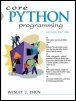

|  |
| ||||||||||||||||||||||||||||
| Table of Contents | Index |
 |
Praise for Core Python Programming "The long-awaited second edition of Wesley Chun's Core Python Programming proves to be well worth the waitits deep and broad coverage and useful exercises will help readers learn and practice good Python." Alex Martelli, author of Python in a Nutshell and editor of Python Cookbook "There has been lot of good buzz around Wesley Chun's Core Python Programming. It turns out that all the buzz is well earned. I think this is the best book currently available for learning Python. I would recommend Chun's book over Learning Python (O'Reilly), Programming Python (O'Reilly), or The Quick Python Book (Manning)." David Mertz, Ph.D., IBM DeveloperWorks® "I have been doing a lot of research [on] Python for the past year and have seen a number of positive reviews of your book. The sentiment expressed confirms the opinion that Core Python Programming is now considered the standard introductory text." Richard Ozaki, Lockheed Martin "Finally, a book good enough to be both a textbook and a reference on the Python language now exists." Michael Baxter, Linux Journal "Very well written. It is the clearest, friendliest book I have come across yet for explaining Python, and putting it in a wider context. It does not presume a large amount of other experience. It does go into some important Python topics carefully and in depth. Unlike too many beginner books, it never condescends or tortures the reader with childish hide-and-seek prose games. [It] sticks to gaining a solid grasp of Python syntax and structure." http://python.org bookstore Web site "[If ] I could only own one Python book, it would be Core Python Programming by Wesley Chun. This book manages to cover more topics in more depth than Learning Python but includes it all in one book that also more than adequately covers the core language. [If] you are in the market for just one book about Python, I recommend this book. You will enjoy reading it, including its wry programmer's wit. More importantly, you will learn Python. Even more importantly, you will find it invaluable in helping you in your day-to-day Python programming life. Well done, Mr. Chun!" Ron Stephens, Python Learning Foundation "I think the best language for beginners is Python, without a doubt. My favorite book is Core Python Programming." s003apr, MP3Car.com Forums "Personally, I really like Python. It's simple to learn, completely intuitive, amazingly flexible, and pretty darned fast. Python has only just started to claim mindshare in the Windows world, but look for it to start gaining lots of support as people discover it. To learn Python, I'd start with Core Python Programming by Wesley Chun." Bill Boswell, MCSE, Microsoft Certified Professional Magazine Online "If you learn well from books, I suggest Core Python Programming. It is by far the best I've found. I'm a Python newbie as well and in three months time I've been able to implement Python in projects at work (automating MSOffice, SQL DB stuff, etc.)." ptonman, Dev Shed Forums "Python is simply a beautiful language. It's easy to learn, it's cross-platform, and it works. It has achieved many of the technical goals that Java strives for. A one-sentence description of Python would be: 'All other languages appear to have evolved over time--but Python was designed.' And it was designed well. Unfortunately, there aren't a large number of books for Python. The best one I've run across so far is Core Python Programming." Chris Timmons, C. R. Timmons Consulting "If you like the Prentice Hall Core series, another good full-blown treatment to consider would be Core Python Programming. It addresses in elaborate concrete detail many practical topics that get little, if any, coverage in other books." Mitchell L Model, MLM Consulting "Core Python Programming is an amazingly easy read! The liberal use of examples helps clarify some of the more subtle points of the language. And the comparisons to languages with which I'm already familiar (C/C++/Java) get you programming in record speed." Michael Santos, Ph.D., Green Hills Software The Complete Developer's Guide to PythonFully Updated for Python 2.5
Python is an agile, robust, expressive, fully object-oriented, extensible, and scalable programming language. It combines the power of compiled languages with the simplicity and rapid development of scripting languages. In Core Python Programming, Second Edition, leading Python developer and trainer Wesley Chun helps you learn Python quickly and comprehensively so that you can immediately succeed with any Python project. Using practical code examples, Chun introduces all the fundamentals of Python programming: syntax, objects and memory management, data types, operators, files and I/O, functions, generators, error handling and exceptions, loops, iterators, functional programming, object-oriented programming and more. After you learn the core fundamentals of Python, he shows you what you can do with your new skills, delving into advanced topics, such as regular expressions, networking programming with sockets, multithreading, GUI development, Web/CGI programming and extending Python in C. This edition reflects major enhancements in the Python 2.x series, including 2.5 as well as capabilities set for future versions. It contains new chapters on database and Internet client programming, plus coverage of many new topics, including new-style classes, Java and Jython, Microsoft Office (Win32 COM Client) programming, and much more.
Core Python Programming delivers
|